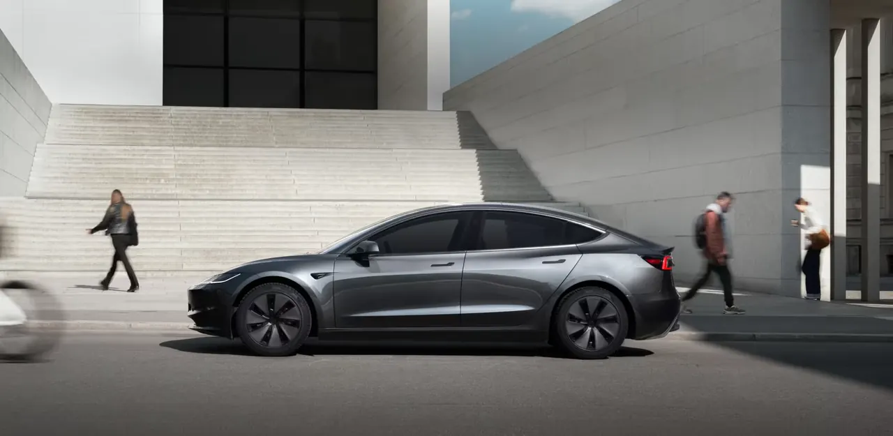
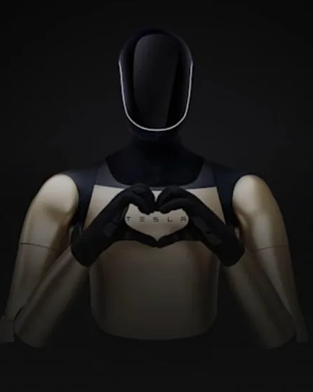
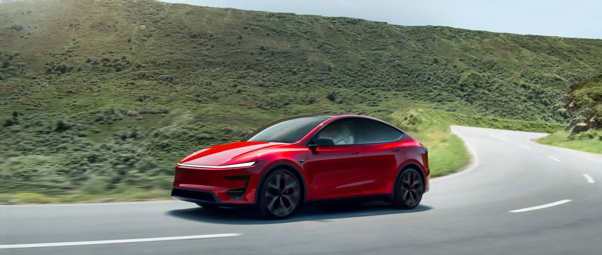

Programa Recomendar y ganar · España
1.000 km de Supercarga gratis
Si compras tu primer Tesla Model 3 o Model Y nuevo desde un enlace de recomendación, recibes 1.000 km de Supercarga gratis. Abre el enlace antes de hacer el pedido: después ya no se puede añadir.
1.000 km para utilizar en 12 meses
Tres pasos, y el primero va antes del pedido
-
Accede al configurador
Te lleva a tesla.com con la recomendación ya aplicada. Si ya tienes la web de Tesla abierta, empieza de nuevo desde el enlace.
-
Configura y haz el pedido
Elige tu Model 3 o Model Y y haz el pedido en esa misma página, sin salir ni empezar otra sesión.
-
Recibe el coche y los km
Al aceptar la entrega, los 1.000 km se añaden en la app de Tesla, en Menú › Carga.
Model 3 y Model Y, nuevos
Vale para pedidos personalizados y para coches nuevos de inventario comprados desde el enlace.
Model Y
ElegibleNo elegibles: Model S, Model X y vehículos de ocasión certificados.

Quién recomienda
Un propietario de Model 3 en España
Conduzco un Model 3 Premium de propulsión trasera. Comparto mi enlace aquí para que cualquiera que vaya a comprar su primer Tesla no se quede sin los 1.000 km por hacer el pedido sin enlace.
Antes de publicar cada cambio reviso las condiciones en la web de Tesla y en mi app. La fecha de la última comprobación está siempre al pie de la página.
- Model 3 Premium RWD
- España
Todo sobre los referidos de Tesla
Respuestas basadas en las condiciones oficiales de Tesla España.
¿Qué es el programa de referidos de Tesla?
Es el programa Recomendar y ganar de Tesla. Si compras tu primer Model 3 o Model Y nuevo desde el enlace de recomendación de un propietario, los dos recibís una ventaja. En España, ahora mismo son 1.000 km de Supercarga gratis para cada uno.
¿Qué ganas por comprar con el referido?
1.000 km de Supercarga. El precio de tu coche no cambia: la ventaja del recomendador la pone Tesla, no sale de tu bolsillo.
¿Hay algún código de referido de Tesla mejor que otro?
No. Todos los enlaces de propietarios en España dan la misma ventaja al comprador. Lo único que importa es que el propietario no haya llegado al límite de 10 recomendaciones en el año, porque entonces el comprador no recibe nada.
¿Puedo añadir el enlace de referido después de hacer el pedido?
No. Tesla no permite aplicar un enlace de recomendación a un pedido ya hecho. Abre el enlace primero y haz el pedido desde esa misma página.
¿Qué modelos de Tesla entran en el programa?
Model 3 y Model Y. El Model S y el Model X no tienen ventajas de comprador en el programa actual.
¿Vale el enlace para un Tesla de ocasión?
No para vehículos de ocasión certificados. Sí vale para un pedido personalizado nuevo o para un coche nuevo de inventario comprado desde el enlace.
¿Puedo usar un enlace de referido si ya tengo o he tenido un Tesla?
La ventaja de comprador es solo para tu primer Model 3 o Model Y. Si ya has tenido uno, Tesla te ofrece ventajas de fidelización desde tu propia cuenta, no a través de un enlace de otra persona.
¿Cuándo recibo los 1.000 km gratis?
Cuando aceptas la entrega del coche. Hasta entonces aparecen como pendientes.
¿Dónde veo los km de Supercarga en la app de Tesla?
Abre la app de Tesla, toca el menú de la esquina superior derecha y entra en Carga.
¿Caducan los km de Supercarga del referido?
Sí, a los 12 meses de la fecha de concesión. Cuando caducan, dejan de aparecer en la app.
¿Puedo cambiar los km por dinero o pasárselos a otra persona?
No. Las ventajas no son transferibles ni se pueden canjear por efectivo.
¿Usar el enlace cambia el precio del coche?
No. Configuras y pagas en tesla.com con los mismos precios. El enlace solo añade los 1.000 km.
¿Es seguro el enlace ts.la?
Sí. ts.la es el acortador de enlaces de Tesla y te lleva a tesla.com. La compra la haces directamente con Tesla y esta web no recoge ningún dato tuyo.
¿Me das algo extra por usar tu enlace?
No. Las condiciones de Tesla prohíben pagar u ofrecer incentivos por usar un enlace de recomendación. Lo que recibes son los 1.000 km que da Tesla.
¿Vale para todas las versiones del Model 3 y del Model Y?
Las condiciones de Tesla hablan de Model 3 y Model Y sin excluir versiones, así que vale para cualquiera de ellas siempre que sea nuevo.
¿Esta web es de Tesla?
No. Es una web independiente hecha por un propietario de un Model 3 en España. No está afiliada, patrocinada ni aprobada por Tesla, Inc.

¿Vas a pedir tu primer Tesla?
Abre el enlace antes de configurar y te llevas 1.000 km de Supercarga.
Configurador